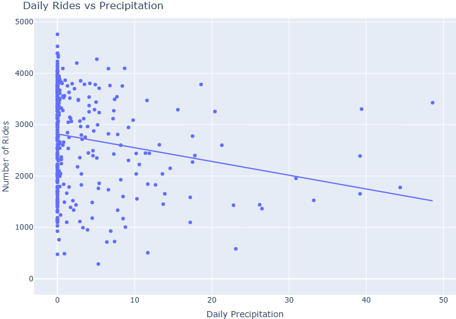

This project analyzes Jersey City Citi Bike trips (Feb 2025 – Jun 2026) by combining trip, weather, and geographic data into a single PostgreSQL/PostGIS database, then visualized in Tableau.
Objective
Download data from multiple web sources
Clean and prepare data with Python
Perform exploratory and spatial analysis
Store processed data in PostgreSQL/PostGIS
Build a dashboard-ready Materialized View
Connect Tableau to PostgreSQL
Create a Tableau Extract
Build an interactive analytics dashboard
End-to-End Analytics Workflow
flowchart LR
A[Citi Bike ZIP Files] --> D[Python]
B[Weather API] --> D
C[Neighborhood GeoJSON] --> D
D --> E[(PostgreSQL / PostGIS)]
E --> F[Materialized View]
F --> G[Tableau]
G --> H[Tableau Extract]
H --> I[Interactive Dashboard]
Technologies Used
Python — data collection, preparation, analysis
pandas — tabular data manipulation
GeoPandas — geospatial analysis
Requests — downloading data and calling APIs
PostgreSQL — analytical database
PostGIS — spatial database extension
SQLAlchemy — Python database integration
Docker — PostgreSQL/PostGIS environment
Tableau — dashboard development
GitHub — project version control
1. Downloading Data from the Web
The project starts with three independent external data sources.
Citi Bike Trip Data
Monthly Citi Bike ZIP files
17 monthly datasets (February 2025 – June 2026)
Each ZIP file contains CSV trip records
Jersey City trips only
Downloading Citi Bike Data: Implementation
Loops through each month and downloads the ZIP from Amazon S3
Handles two file naming formats automatically
Extracts the CSV from each ZIP into the data folder
Deletes the ZIP file after extraction to save space
Citi Bike Trip Data
The Citi Bike dataset contains individual bicycle trips.
Important Variables
ride_id
rideable_type
started_at
ended_at
start_station_name
end_station_name
start_lat
start_lng
end_lat
end_lng
member_casual
Each row represents one Citi Bike trip.
Weather Data
Open-Meteo Historical Weather API
Daily weather observations
JSON response converted to tabular format
Weather Data: Implementation
Calls Open-Meteo Historical Weather API for Jersey City coordinates
Requests daily temperature, precipitation, snowfall, and wind speed
Covers February 2025 – June 2026 to match trip data range
Converts JSON response into a pandas DataFrame
Daily Weather Variables
Mean temperature
Maximum temperature
Minimum temperature
Precipitation
Rain
Snowfall
Maximum wind speed
Neighborhood Geographic Data
The neighborhood dataset contains Jersey City polygon boundaries in GeoJSON format.
Jersey City neighborhood GeoJSON
Polygon boundaries used for spatial analysis
Geographic Data Usage
Identify the neighborhood of each start station
Identify the neighborhood of each end station
Aggregate rides geographically
Compare neighborhood activity
Create Tableau geographic visualizations
GeoPandas and PostGIS are used for spatial operations.
Weather data is combined with daily Citi Bike activity.
Questions
Does temperature affect the number of rides?
How does rainfall influence demand?
Are rides lower on snowy days?
Does wind speed influence activity?
The relationship between temperature and daily rides is particularly useful for understanding seasonal demand.

4. Creating the Citi Bike Database
After the Python analysis, cleaned datasets are stored in PostgreSQL.
PostGIS is enabled to support geographic data.
Database
Database name: citibike
Database engine: PostgreSQL
Spatial extension: PostGIS
Environment: Docker container
Database Structure
Main database tables:
Table
Description
jersey_city
Individual Citi Bike trips
jersey_weather
Daily weather observations
jersey_city_neighborhoods
Neighborhood polygons
jc_stations
Citi Bike station locations
The database separates raw analytical entities while SQL is used to combine them for reporting.
PostgreSQL + PostGIS
PostGIS extends PostgreSQL with geographic functionality.
Example spatial operation:
SELECT s.station_name, n.neighborhoodFROM jc_stations AS sLEFTJOIN jersey_city_neighborhoods AS nON ST_Within( s.geometry, n.geometry );
This assigns each station to its corresponding Jersey City neighborhood.
5. Dashboard-Ready Materialized View
Instead of asking Tableau to repeatedly join multiple large tables, a Materialized View is created.
CREATEMATERIALIZEDVIEWmv_tableau_citibike_dashboardASSELECT...FROM jersey_city AS ridesLEFTJOIN jersey_weather AS weatherON rides.ride_date = weather.date;
The view becomes the main analytical dataset for Tableau.
Why Use a Materialized View?
A Materialized View stores the result of the analytical query physically in PostgreSQL.
Benefits
Faster Tableau queries
Centralized business logic
Reusable analytical dataset
Less processing inside Tableau
Easier dashboard maintenance
Consistent calculations
The final dataset follows a wide-table structure designed specifically for dashboard analysis.
Dashboard Dataset
The Materialized View contains both original and derived variables.
Example Fields
Ride ID
Ride date
Month
Hour
Day of week
Member type
Bike type
Duration
Distance
Start station
End station
Start neighborhood
End neighborhood
Temperature
Rain
Snow
Weather flags
6. Connecting Tableau to PostgreSQL
Tableau Desktop connects directly to the PostgreSQL database.
Connection Information
Host: localhost
Port: 5432
Database: citibike
Schema: public
Data source: mv_tableau_citibike_dashboard
This creates a centralized analytical data source instead of loading independent CSV files into Tableau.
7. Building a Tableau Extract
After connecting to PostgreSQL, a Tableau Extract is created.
Source
mv_tableau_citibike_dashboard
Extract Format
.hyper
Why Use an Extract?
Faster dashboard performance
Optimized Tableau aggregations
Reduced database workload
Dashboard can work offline
Smaller analytical file
8. Tableau Dashboard
The final stage is an interactive Tableau dashboard.
Dashboard Components
KPI cards (Total Rides, Avg Duration, Avg Distance, Member Share, Rainy Day Rides)
The dashboard begins with a high-level overview of Citi Bike activity.
Example KPIs
Total rides
Average ride duration
Average ride distance
Member share
Number of rainy-day rides
KPIs allow users to understand the overall performance before exploring individual charts.
Dashboard: Time Analysis
The dashboard provides several views of activity over time.
Visualizations
Daily ride trend
Rides by hour of day
Rides by day of week
Monthly trend
These charts help identify peak usage periods and seasonal patterns.
Dashboard: Geographic Analysis
Neighborhood and station information is displayed geographically.
Geographic Visualizations
Top start neighborhoods
Top end neighborhoods
Start station activity
End station activity
Spatial analysis helps reveal which parts of Jersey City generate the highest Citi Bike demand.
Dashboard: Weather Analysis
Weather measures are connected with Citi Bike demand.
Analysis
Rides vs temperature
Daily rides and temperature trend
Rainy-day usage
Seasonal weather changes
This can help explain why demand changes throughout the year.
Final Data Architecture
Citi Bike ZIP Files |Weather API ---------> Python | |Neighborhood GeoJSON | v Data Preparation | v Python Analysis | v PostgreSQL/PostGIS | v Materialized View | v Tableau | v Tableau Extract | v Interactive Dashboard
What I Learned
This project demonstrates that a dashboard is only the final stage of a much larger analytics workflow.
Main Lessons
Working with multiple data sources
Automating web data collection
Cleaning large datasets with pandas
Performing spatial analysis
Using PostgreSQL and PostGIS
Creating analytical SQL views
Connecting databases to Tableau
Designing dashboard-ready datasets
Building interactive visual analytics
Key Takeaway
The main objective was not only to create visualizations.
The project demonstrates a complete end-to-end Data Analytics workflow:
Web Data → Python → Analysis → PostgreSQL/PostGIS → Tableau → Dashboard
This approach separates:
Data Collection → Data Preparation → Analytics → Storage → Visualization
and creates a workflow that is easier to reproduce, maintain, and extend.
Thank You
Citi Bike Jersey City 2025–2026
End-to-End Data Analytics Project
Python · pandas · GeoPandas · PostgreSQL · PostGIS · Tableau Show less